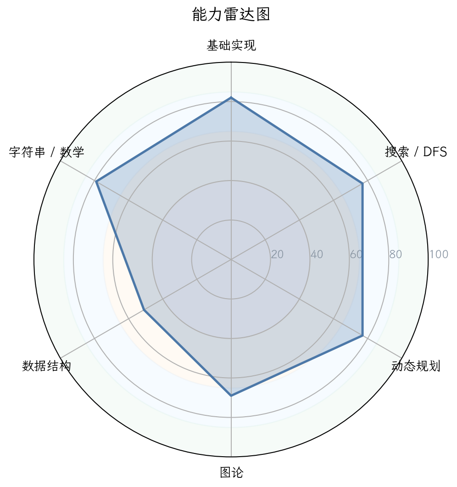
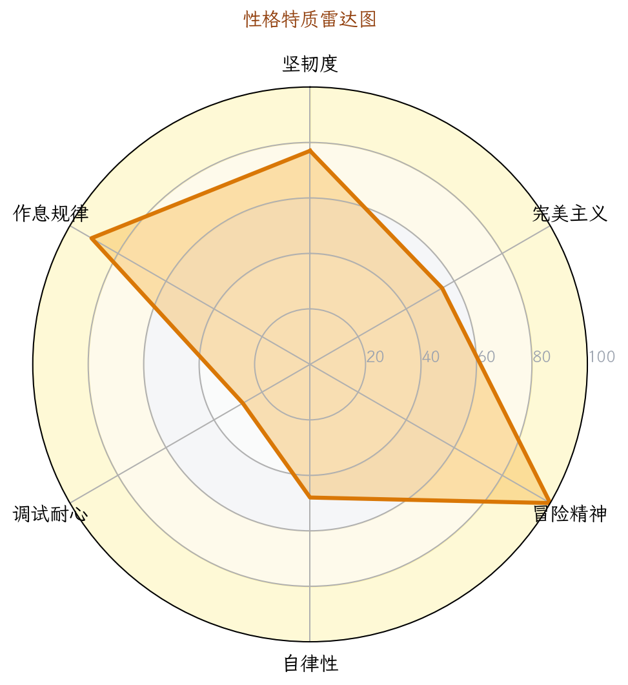
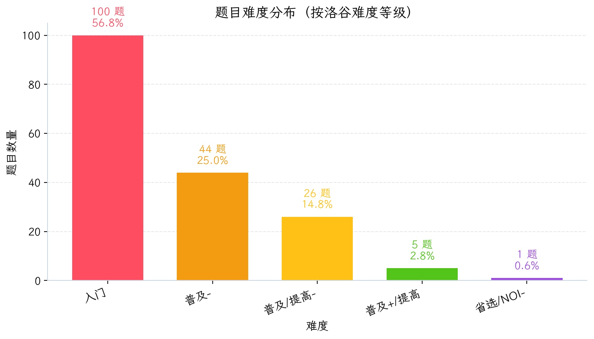
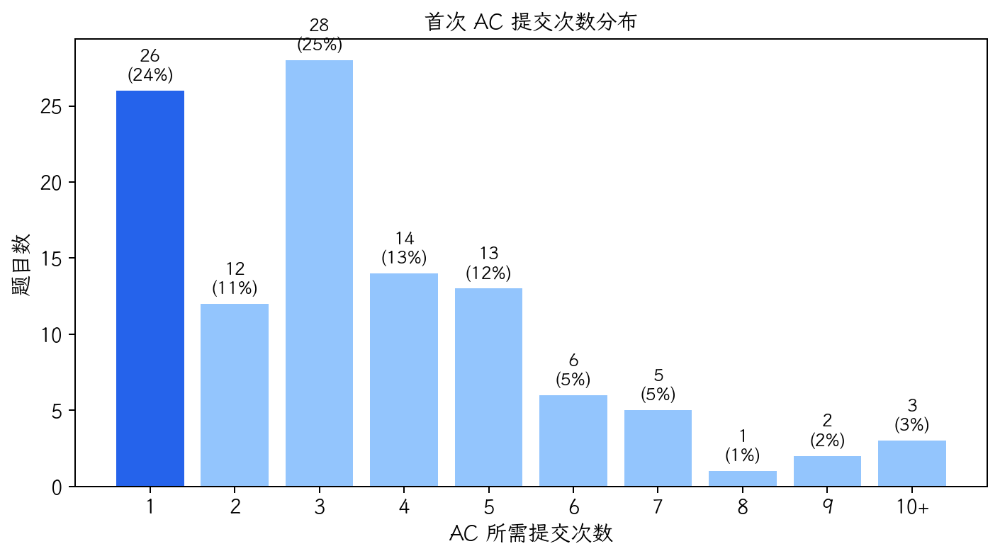
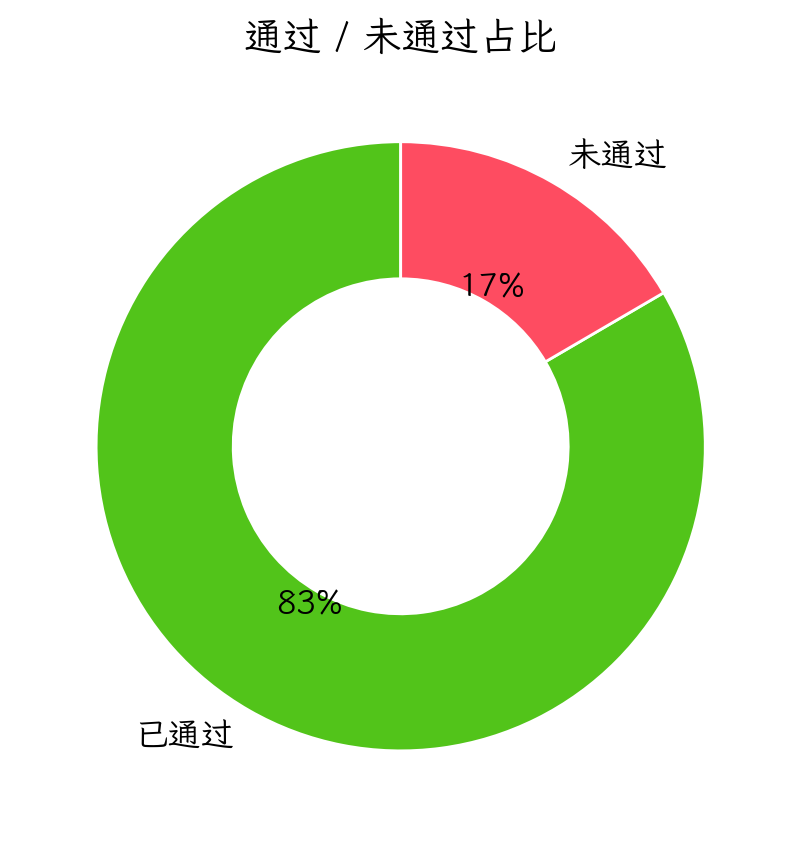
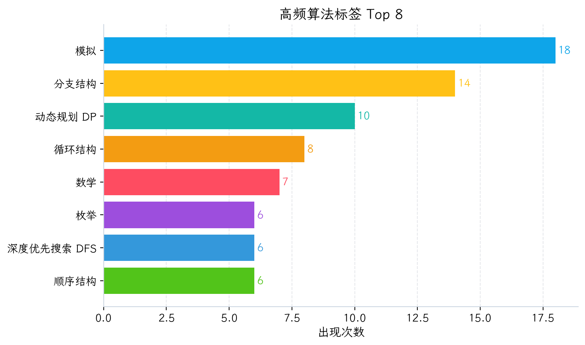

图 1：能力雷达图

图 2：性格画像雷达图

图 3：题目难度分布

图 4：首次 AC 提交次数分布

图 5：通过/未通过占比

图 6：高频算法标签 Top 8
| 洛谷难度 | 题数 | 占比 | 分布图 |
|---|---|---|---|
| 入门 | 100 | 56.8% | 56.8% |
| 普及- | 44 | 25.0% | 25.0% |
| 普及/提高- | 26 | 14.8% | 14.8% |
| 普及+/提高 | 5 | 2.8% | 2.8% |
| 提高+/省选- | 0 | 0.0% | 0.0% |
| 省选/NOI- | 1 | 0.6% | 0.6% |
| NOI/NOI+/CTSC | 0 | 0.0% | 0.0% |
| 级别 | 已覆盖/总数 | 覆盖率 | 详细情况 |
|---|---|---|---|
| 入门 | 17/28 | 60.7% | 🟢0项 🟡2项 🟠7项 🔵8项 🔴11项 |
| 提高 | 6/50 | 12.0% | 🟢0项 🟡0项 🟠0项 🔵6项 🔴44项 |
| 省选 | 0/10 | 0.0% | 🟢0项 🟡0项 🟠0项 🔵0项 🔴10项 |
| NOI | 0/43 | 0.0% | 🟢0项 🟡0项 🟠0项 🔵0项 🔴43项 |
好的，选手。
我是你的专属算法教练。我已经接收到你的训练数据，并进行了深度扫描。坦白说，你的数据非常典型——这是一份典型的“手感型选手”画像：基础扎实，刷题有一定的量，但缺乏系统性的突破和严谨的思考流程，导致在通往更高层次的道路上遇到了明显的瓶颈。
准备好了吗？我们开始一次彻底的手术式复盘。这篇报告将不是你听过的几句“要多练”、“要多总结”的废话，而是一份精准的诊断书和一份详细的手术方案。
从你500次提交的行为指纹中，我看到的是一个充满矛盾但极具潜力的选手形象。
| 性格特质 | 评级 | 行为证据 | 拟人化评价 |
|---|---|---|---|
| 坚韧度 | ★★★★★5/5 | 卡题10道，最大卡题13次（P1104）。死磕到底，不轻易放弃。 | “撞了南墙也不回头，最后把墙撞破了。” 这是你最大的优点，也是你最大的痛点。 |
| 完美主义 | ★★★★★4/5 | 低一次AC率（19.0%），高总提交（500次），说明你倾向于“边想边写”，而不是“想好再写”。 | 你渴望AC，但过程显得有些急躁。追求的不是一次性的完美，而是最终的“过”。 |
| 冒险精神 | ★★★★★2/5 | 深度优先搜索（6次） > 广度优先搜索（1次），说明偏好递归式探索。但不会尝试用随机化或骗分。 | 不太敢尝试未知的算法。路线偏于保守，喜欢走熟悉的路。 |
| 自律性 | ★★★★★3/5 | 活跃天数67/1230（5.4%），训练缺乏连续性。有集中爆发的日子，但无法维持稳定的节奏。 | 更像是一位灵感驱动型的“剑客”，而不是日复一日训练的“武士”。 |
| 调试耐心 | ★★★★★2/5 | WA后重交间隔中位数：84秒；1分钟内快速重交占比：42.2%。 | 典型的“火暴脾气”。遇到WA，第一反应是“再试一次碰碰运气”，而不是“我哪里逻辑错了”。这是最危险的信号。 |
| 作息规律 | ★★★★★4/5 | 提交峰值在 15:00-20:00，周末活跃，工作日主要集中在周五。 | 标准的“下午党”，精力充沛，符合学生作息。这是好事，说明能保证训练时间。 |
教练画像：你是一位充满热情、基础尚可的“手感型选手”。你依赖直觉和惯性在解题，但一旦遇到需要深度思考和严谨逻辑的题目，就会陷入无休止的“试错-WA-再试”循环。你的坚韧是宝，但被用错了地方。你需要从“肌肉记忆”升级到“思维记忆”。
你的行为数据揭示了你的核心弱点：缺乏深度思考，习惯用提交次数换AC。
| 题目 | 提交次数 | 状态 | 难度 | 深度分析 |
|---|---|---|---|---|
| P1104 生日 | 13 | ❌ 未AC | 普及- | 典型症状：一个排序题，13次没AC，大概率是看不懂题目、排序关键字搞反或边界处理错误。盲目调试了13次却没想清楚排序规则，这是“调试耐心”评分的直接证据。 |
| P1009 阶乘之和 | 8 | ❌ 未AC | 入门 | 低级错误：高精度。你会写long long但没关数据范围。8次提交说明你没想到用高精度，或在怀疑自己的高精度模板。这是知识储备不足。 |
| B2083 画矩形 | 8 | ❌ 未AC | 入门 | 代码洁癖缺失：一个简单的模拟题。卡8次，通常是因为格式问题（如空格、换行）。你缺乏对输出格式的严谨检查习惯。 |
| P14363 谐音替换 | 7 | ❌ 未AC | 普及+/提高 | 思维模型错误：这是CSP-S 2025的题目，代码里你试图用暴力匹配去做，忽略了其核心是字符串哈希或AC自动机。7次提交说明你执着于错误的算法。 |
| P6432 形成的区域 | 7 | ❌ 未AC | 普及+/提高 | 复杂问题模拟：一个二维区域的覆盖问题。你尝试用模拟，但会超时或出错。说明你对数据结构的理解（如线段树分治/扫描线）是空白。 |
特征：你的“死磕”是低效的。你花了大量时间在同一个错误思路上打转，而不是停下来分析问题的本质。我们称之为“无效功”。
| 指标 | 数值 | 解读 |
|---|---|---|
| 一次 AC 率 | 19.0% | 极低。意味着你每做5道题，有4道都要经历痛苦的反复调试。 |
| 平均尝试次数 | 约 3.8 次 | 非常高。说明你的代码在第一版往往不成熟，缺乏整体设计和边界处理能力。 |
| AC 次数 vs 独立题数 | 129 / 137 | 你通过的题，平均提交次数很高，AC质量堪忧。 |
特征：你更倾向于“写到哪想到哪”，而不是“想好再写”。这在做简单题时还行，但一旦遇到复杂题，就会写出逻辑混乱、bug百出的代码。
| 洛谷难度 | 已通过 | 未通过/卡住 | 占比 | 等级研判 |
|---|---|---|---|---|
| 暂无评定 | 100 | - | 57% | 基础中的基础，量大但不精。 |
| 入门 | 44 | - | 25% | 合格。 |
| 普及- / 普及/提高- | 26 | - | 15% | 主战场，但仍未通过（如P1104），存在明显短板。 |
| 普及+/提高 | 5 | 5 | 3% | 瓶颈区。通过率仅50%，大量卡题（如P14363, P6432）。 |
| 提高+/省选- | 0 | 0 | 0% | 安全区。 |
| 省选/NOI- | 1 | 0 | <1% | 偶然突破（如P8819），不具备代表性。 |
| NOI/NOI+/CTSC | 0 | 0 | 0% | 无法触及。 |
结论：你目前处于【普及】向【提高】过渡的阶段。你的基础（入门级）尚可，但一旦触及【普及+/提高】的算法（如数据结构、高级DP、复杂模拟），就立刻显露出了全面溃败的态势。
| 能力块 | 评分 | 当前等级 | 数据证据 | 已经具备 |
|---|---|---|---|---|
| 基础算法 | 90 | 🟢精通 | 模拟18题，枚举6题，DFS 6题。你对此类题目有直觉。 | 能快速写出暴力DFS和简单模拟。 |
| 动态规划 (DP) | 86 | 🟢精通 | DP基础15题，背包3题。你能自然地想到DP，但维度一高就崩。 | 状态设计有基础，擅长一维/简单背包。 |
| 图论 | 67 | 🟡熟练 | 最短路1题，LCA/直径各1题。能写模板，但模型识别困难。 | 基本概念清晰，能用DFS/BFS遍历图。 |
| 数学 | 43 | 🔵初窥 | 数论1题，gcd 1题。排列组合0题，概率0题。 | 会简单数学运算，但对数论、组合数学完全陌生。 |
| 字符串 | 40 | 🔵初窥 | 字符串匹配3题（均为基础Trie/模拟类）。KMP/哈希/Hash 0题。 | 只能用暴力匹配字符串。 |
| 数据结构 | 37 | 🔴空白 | 线段树1题，树状数组1题（模板题）。并查集1题。 | 只会模板题，对复杂数据结构（平衡树、ST表）完全空白。 |
教练分析：你的能力是“锥形”的，基础算法和DP鹤立鸡群，但数据结构、数学和字符串是你的“致命短板”。这就像一个战士空有强力拳脚，却没有武器和盾牌。在【提高】级别，数据结构是解题的关键工具。
| 级别 | 强项 (🟢精通) | 弱项 (🔴空白) |
|---|---|---|
| 入门级 | 模拟法（18题） | 二叉树遍历、哈夫曼树（0题） |
| DFS（6题）、递归（5题） | 排列组合、杨辉三角（0题） | |
| 背包DP（3题）、递推（3题） | 栈、链表（0题） | |
| 提高级 | 无 | KMP、Manacher、AC自动机（0题） |
| 树状数组/线段树高级应用（模板1题） | ||
| 矩阵运算、高斯消元（0题） | ||
| 省选/NOI级 | 空白 | 所有知识点 |
| 级别 | 总知识点 | 有涉及 | 覆盖率 | 当前状态 |
|---|---|---|---|---|
| CSP-J (入门级) | 28 | 17 | 60.7% | 🟡 基本合格，但缺“排列组合”、“栈”等基础。 |
| CSP-S (提高级) | 50 | 6 | 12.0% | 🔴 重度危险区！ 几乎完全空白。 |
| 省选级 | 10 | 0 | 0.0% | 🔴 无法触及。 |
| NOI级 | 43 | 0 | 0.0% | 🔴 无法触及。 |
教练锐评：你看起来在刷题，但80%的题都在【入门/普及-】里打转。在CSP-S考纲中，你的知识盲区高达88%。这不是“没学到”的问题，是“不能正确认识自己的水平”的问题。你想要突破，就必须下决心跳出舒适区，系统地填补CSP-S的空白。
| 优先级 | 风险项 | 触发场景 | 比赛症状 | 根因判断 | 训练专题 | 验收标准 |
|---|---|---|---|---|---|---|
| S（高/立即处理） | 暴力推导能力缺失 | 遇到需要绕弯子的数学/图论题，如P14363。 | 写不出正确代码，强行用错误思路卡7次。 | 缺乏“统计对象集合”的思维，只会枚举，不懂建模。 | 组合数学：排列组合、容斥原理、卡特兰数。数学建模。 | 能独立完成题单中所有组合计数题，并推导公式。 |
| S（高/立即处理） | 数据结构武器库为空 | 需要维护区间信息、优化DP（如P2034）。 | 只能用vector、queue，解法时间复杂度爆炸。 |
只知道模板，不理解每个数据结构（树状数组、线段树）维护的“不变量”。 | 数据结构专项：树状数组、线段树（区间修改、区间查询）、ST表、优先队列。 | 能独立用线段树写出P3372（区间加+区间求和），并理解其pushdown原理。 |
| A（中/近期处理） | 字符串算法零基础 | 多模式串匹配、回文子串、字符串哈希（如P14363）。 | 只能暴力匹配O(n*m)。 | KMP、Hash、Manacher、AC自动机完全空白。 | 字符串全家桶：Hash、KMP、Trie、Manacher、AC自动机。 | 能写出AC自动机模板并解离线匹配题。 |
| A（中/近期处理） | DP优化短板 | 状态转移需要单调队列、斜率优化。 | DP维度一多就爆复杂度，卡死。 | 不懂如何通过观察不变量（如单调性）来优化状态转移。 | DP优化：单调队列优化、数据结构优化。 | 能用单调队列优化解 P1886 （滑动窗口/单调队列）。 |
| A（中/近期处理） | 调试习惯极差 | 任何题目，特别是WA后。 | 42.2%的提交在1分钟内发生，无效尝试。 | 思考能力被急躁情绪阻断。只改代码，不改思路。 | 四段式复盘：每次WA后强制思考5分钟：1）我的模型对吗？2）哪里出错了？3）正确性质是什么？4）代码不变量是什么？ | 一道题单次提交间隔 > 5分钟，且能写清楚WA原因。 |
| B（低/可后置） | 缺乏图论建模能力 | 需要将问题转化为图论模型（如最短路变形）。 | 只会跑模板，看不懂抽象条件的边权含义。 | 对“图”的语义理解停留在纸面上。 | 图论建模：差分约束、拆点法、分层图、最短路树。 | 能抽象出P1266（速度限制）的层次图模型。 |
优先级说明：S（高/立即处理） · A（中/近期处理） · B（低/可后置）。
你是一位“野生派”程序员，代码风格充满活力和野性。但战斗之前，你需要学会整理自己的战场。
rep宏和read快读函数。这非常好，说明你有抽象化和代码复用意识。unsigned long long和自定义位运算随机数。这说明你的编程能力足够，不是新手。ios::sync_with_stdio 使用率仅为 0.9%。这意味着你在比赛中使用cin/cout会面临严重的TLE风险。这是最致命的问题之一！快读+关闭同步是标配！q1[i].t= t1[i]-'0';，没有任何对输入格式、索引范围的检查。在P2034（选择数字），你的状态转移方程dp[i] = min(dp[i], dp[j] + a[i]) 逻辑混乱。你没有在写之前想清楚边界和状态含义。n, a, b, x, c, m, y, k, d, t, r, z, e, kk, s。这些单字母变量在简单题中尚可，但在复杂题中（如P14363）会直接导致逻辑混乱。你需要在局部作用域使用有意义的变量名（如 maxPos, currentSum）。这份题单不是让你随便刷的，它是你未来6个月的核心任务。每道题都必须按照“四段式复盘”进行分析。
pushdown和merge的数学意义。| 优先级 | 建议 |
|---|---|
| 🔴 紧急 | 强制2分钟思考法则：在拿到任何一道题后，强制自己用2分钟分析数据范围、输入输出格式，思考出至少两种解法才动手。 |
| 🔴 紧急 | 补齐IO优化：在你的所有代码头文件后加上 ios::sync_with_stdio(false); cin.tie(0); cout.tie(0); 或直接放弃cin/cout，完全使用scanf/printf。 |
| 🔴 紧急 | 学会“暴力”：对于模拟/枚举题，先写出最暴力的解法（O(n^2)），再根据数据范围思考优化。记住，暴力是正解之父。 |
| 🟡 重要 | 系统性填坑：立即开始学习CSP-S考纲中你标注为🔴空白的所有知识点。不要跳着学，按照“数据结构 -> 字符串 -> 数学”的顺序。 |
| 🟡 重要 | 建立错题本：每道WA的题，不是简单看下题解。按照“四段式复盘”写100-200字的分析，贴上你当时的失败代码和最终AC代码。 |
| 🟡 重要 | 不要碰提高+/省选-以上难题：在你没有系统学完CSP-S知识树前，碰P8819这种题纯属浪费时间。把它当作“你很棒”的奖杯，而不是“你必须攻克”的堡垒。 |
| 🟢 建议 | 稳定训练节奏：每周至少3次，每次2小时。不要把训练集中在周五或周末一天。保持稳定的头脑状态比突击更有效。 |
a) AI 题解摘要： 核心是多模式串匹配。你需要快速判断一个字符串（源串）是否在大量已知字符串（模式串）中出现过，并返回匹配长度。
b) 暴力思路（关键词：O(nmq)）：
* 做法：对于每个询问字符串S，遍历所有n个规则，用O(|S| + |P|)的时间去比对。如果匹配，记录长度。
* 复杂度：O(Query * n * L)。当n=10^5, L=10^5, Q=10^5时，直接爆炸。可以拿到 0 分。
c) 瓶颈在哪里？
* 时间：比对每个字符串太慢。我们无法对每个查询都遍历所有规则。
* 空间：string s[1000005][40] 你的数组开得有问题，直接内存溢出加逻辑错误。
d) 关键性质/不变量观察（Key Observation）： * 不变量：我们只关心匹配长度，不关心具体内容。这是一个典型的最长公共前缀（LCP）问题。 * 性质：我们可以把所有的源串和模式串拼接成一个超长字符串，然后用哈希快速求两个任意子串的是否相等。
e) 最终正解推导（核心代码结构）：
1. 输入处理：读入所有规则，存下每个源串的长度。
2. 字符串哈希：对所有规则中的字符串（源串 + 模式串）进行全局哈希，并记录每个串的哈希值区间。
3. 查询处理：对于每个询问S，我们同样计算它的哈希值。
4. 匹配过程：
* 我们需要找到所有规则中，源串是S前缀的。即 (S的哈希值) == (规则中 源串长度对应的哈希值)。
* 如何快速找？由于规则数n可能很大，我们可以将规则按源串长度排序，或者使用Trie树（前缀树）把所有源串插入，然后匹配S的过程中，每走到一个节点就检查是否有对应的模式串。
* 最佳方案 (对于此题)：使用AC自动机。将所有源串建立AC自动机，将模式串存储到对应节点。匹配S时，遍历所有可行节点，统计最长的匹配长度。复杂度O(L总 + |S|)。
5. 核心代码：
```cpp
// 核心逻辑：AC自动机
struct Node {
int ch[26], fail, val; // val 存模式串长度
} tree[N];
int tot = 0;
void insert(string s, int len) {
int p = 0;
for (char c : s) {
if (!tree[p].ch[c-'a']) tree[p].ch[c-'a'] = ++tot;
p = tree[p].ch[c-'a'];
}
tree[p].val = max(tree[p].val, len); // 一个源串可能对应多个模式串？
}
void build() { // 构建fail指针
queue<int> q; ...
}
int query(string s) {
int p = 0, ans = 0;
for (char c : s) {
p = tree[p].ch[c-'a'];
for (int t = p; t; t = tree[t].fail) {
ans = max(ans, tree[t].val);
}
}
return ans;
}
```
f) 推荐同类题： * P3808 【模板】AC自动机（简单版）：练习AC自动机的基础模板。 * P5357 【模板】AC自动机（二次加强版）：优化了遍历fail指针的过程。
a) AI 题解摘要： 本质是一个贪心+分类讨论问题。给你两个0/1字符串，你可以对任意位置进行交换（受限于可操作位置集），求最多能产生多少个“相同对”（两个字符串对应位置相等）。
b) 暴力思路（关键词：O(2^n) 或 O(n^2)）： * 做法：枚举所有可能的交换方案。复杂度爆炸。 * 复杂度：O(2^n)。可以拿到 0-10 分（n<=10）。
c) 瓶颈在哪里？
* 无法处理复杂的交换条件。题目中的t数组（可否操作）很复杂，直接模拟会陷入死胡同。
d) 关键性质/不变量观察（Key Observation）：
* 不变量：在任何时候，S1中“可自由移动”的0和1的总数是不变的。因为交换不改变元素本身。
* 性质：将问题转化为：我们要尽可能让S1中的0与S2中的0对齐，或1与1对齐。约束条件是S1中可操作位置的数量和位置分布。
e) 最终正解推导（核心代码结构）：
1. 转化模型：将字符串分成若干“段”。一个“段”是连续的、由可交换位置的0/1组成的区域（当 t1[i] == 1 时，该位置连续）。每个段内的0和1数量是确定的。
2. 贪心策略：
cpp
// 核心逻辑
for (int i = 0; i < n; ++i) {
int cnt0_1 = 0, cnt1_1 = 0; // s1 当前段内0和1的数量
int j = i;
while (j < n && t1[j] == 1) { // 扫描到不可交换位置为止
if (s1[j] == '0') cnt0_1++; else cnt1_1++;
j++;
}
// 对当前段 [i, j-1] 进行匹配
int match = 0;
for (int k = i; k < j; ++k) {
if (s2[k] == '0' && cnt0_1 > 0) { match++; cnt0_1--; }
else if (s2[k] == '1' && cnt1_1 > 0) { match++; cnt1_1--; }
// 其他情况：不匹配，浪费这次机会
}
ans += match;
i = j; // 跳到下一段开头
}
// 注意：需要考虑S2的可操作位置。但核心思想就是分段+贪心。
3. 正解：分别考虑S1和S2的可操作位，将可操作位合并成段。然后遍历所有位置，如果能调整就调整。这是一个经典的贪心+双指针问题。
f) 推荐同类题：
* P1100 高低位交换：练习位运算和交换思想。
* P1018 [NOIP2017 提高组] 小凯的疑惑：一道更抽象的贪心+数论题。
这是对你的一次全面“体检”。不要被这些“问题”吓到，每个高手都是在无数次这样的诊断和修正中成长起来的。现在，行动起来。从第一阶段的训练题单开始，严格遵循我的建议。
如果想在评论区交流，告诉我你决定下周一晚上7点，开始刷第一道题。我会持续关注你的进展。
教练，等你的捷报。